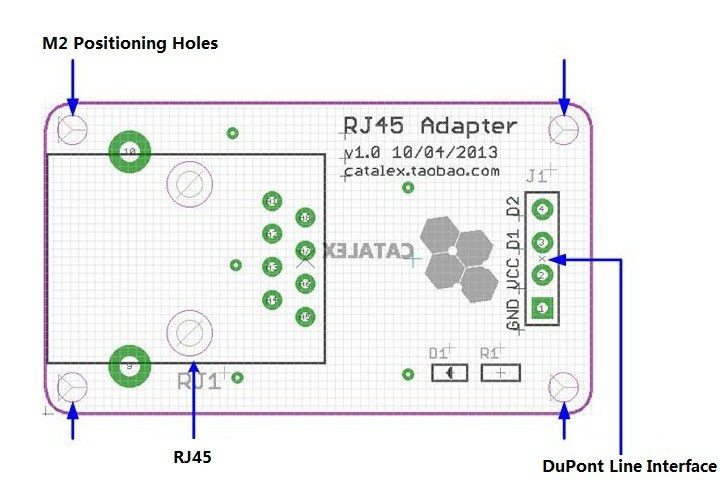

RJ45 interface adapter module is an interface to turn the ordinary into the use DuPont wire twisted pair cable (network cable) RJ45 connector module.
When using temperature measurement humidity, soil moisture detection, ambient light detection, it is often measured distances between locations and motherboard far (over 2 meters), in view of the general DuPont line signal attenuation serious, usually more than one meter of cable length should not use DuPont wire recommended to use shielded cable strong transmission.
So you can use two RJ45 interface adapter module and a 5 m or 30 m of cable, long-distance connection sensor modules or other modules.
Note: This module is generally used in pairs.
Features
Standard RJ45 Connector
Applitations Wide
easy to use
Interface

DuPont Line Interface: A total of four pins (GND, VCC, D1, D2), GND to ground, VCC is the power supply, the remaining two of the signal input / output pin. DuPont wire can be connected directly via electronic building blocks module 4-wire or 3-wire.
RJ45 Interface : You can take the cable shield and strong, long-distance signal transmission and control.
Positioning holes: 4 M2 screws positioning hole diameter is 2.2mm, the positioning of the module is easy to install, to achieve inter-module combination.